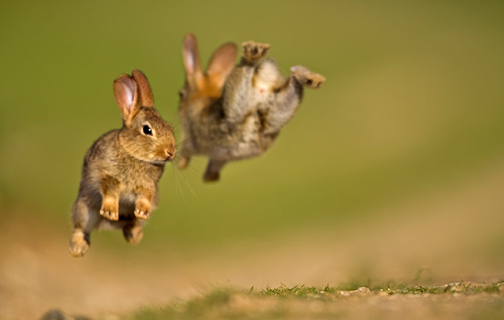

Rabbits are small mammals in the family Leporidae (along with the hare) of the order Lagomorpha (along with the pika). Oryctolagus cuniculus includes the European rabbit species and its descendants, the world's 305 breeds of domestic rabbit.
Family: Leporidae;
Order: Lagomorpha
Kingdom: Animalia
Class: Mammalia
Examples of Rabbit
- Domestic rabbit·
- European rabbit·
- Cottontail rabbit ·
- Pygmy rabbit.
Rabbits are ground dwellers that live in environments ranging from desert to tropical forest and wetland. Their natural geographic range in the Western Hemisphere encompasses the middle latitudes. In the Eastern Hemisphere rabbits are found in Europe, portions of Central and Southern Africa, the Indian subcontinent, Sumatra, and Japan. The European rabbit (Oryctolagus cuniculus) has been introduced to many locations around the world, and all breeds of domestic rabbit originate from the European. Nearly half of the world’s rabbit species are in danger of extinction; many are among the most vulnerable of all mammals.
Rabbit facts:
- A baby rabbit is called a kit, a female is called a doe and a male is called a buck.
- Rabbits are very social creatures that live in groups. ...
- A rabbit's teeth never stop growing! ...
- Rabbits perform an athletic leap, known as a 'binky', when they're happy — performing twists and kicks in mid air!
- Like cats, happy rabbits purr when they’re content and relaxed.
- Rabbits are amazing athletes — they can jump as high as 90 centimetres in one leap!

- A rabbit’s best feature? Their long ears! Growing up to 10 centimetres in length, rabbits can turn their ears by 180 degrees, keeping a careful listen out for predators.
- One of the world’s best-known rabbits is the Warner Bros cartoon character, Bugs Bunny — who’s often seen munching on a carrot! In fact, carrots aren’t a natural part of a rabbit’s diet and can give bunnies an upset stomach if they eat too many.
- Rabbits are very effective baby-makers! Mother rabbits are pregnant for between 28-31 days, giving birth to up to 14 baby rabbits – called kittens – in a single litter. There are over 45 million rabbits in the UK alone!